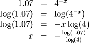
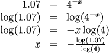

Solving Exponential Equations
When the variable we want to solve for is in the exponent, we again "do the same thing" to both sides of the equation. This time we take logarithms, using the property that
$$a=b \implies log(a) = log(b)\ (or\ ln(a) = ln(b))$$
The logarithm rule:
\(log(M^p)=plog(M)\)
is also useful.
Examples
For each, we solve for \(x\). Notice how we use the \(log(x)\) and \(ln(x)\) functions to eliminate base 10 and base \(e\) exponentials, respectively, and how we use the logarithm rule for other bases:




For each, we solve for \(x\). Notice how we use the \(log(x)\) and \(ln(x)\) functions to eliminate base 10 and base \(e\) exponentials, respectively, and how we use the logarithm rule for other bases:
1.
Note that this solution is exact. The decimal approximation \(x \approx -0.2614\) gives an approximate solution.
2.
Note that we divided both sides by two before taking the log to make life easier for ourselves.
3.
Note that we could solve this with the base 10 log as well:

Check with your calculator that these two answers are the same!
4.
Practice
Question 1:
Question 2:
Question 2:
Return to Main